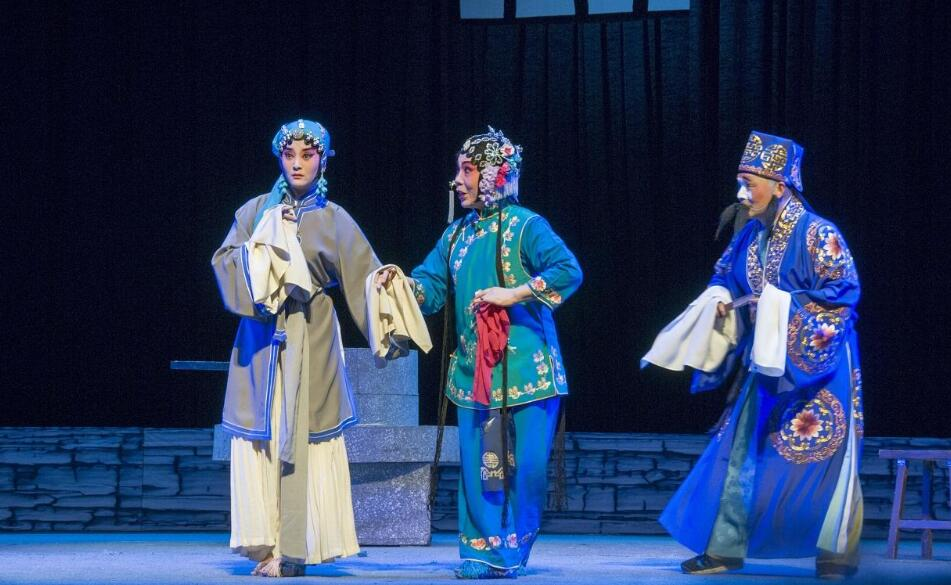

淮剧

淮剧，又名江淮戏、淮戏，是一种古老的地方戏曲剧种，发源于今江苏省淮安市以及盐城市里下河一带，发祥于近现代的上海市，现流行于江苏省、上海市以及安徽省部分地区。
淮剧说的是阜宁话、唱的是阜宁腔，淮剧各个阶段的领军人物多为阜宁人。阜宁是淮剧人的老家。1950年11月，著名淮剧演员马麟童首先在戏单上打出标准的“淮剧”字样。
由此，“江北戏”、“江淮戏”等各种不同称呼逐步向“淮剧”统一。1952年10月，上海市人民淮剧团出席全国第一届戏曲观摩演出大会，“淮剧”其名被正式载入国家级文件档案。1953年，经由周恩来总理提议，国家将这个剧种正式命名为淮剧。
清代中叶，在淮安府（今盐城市和淮安市）和扬州府两地区，当地民间流行着一种由农民号子和田歌“儴儴腔”、“栽秧调”发展而成的说唱形式“门叹词”，形式为一人单唱或二人对唱称之为“二可子”，仅以竹板击节。淮剧后与苏北民间酬神的“香火戏”结合演出，之后又受徽戏和京剧的影响（称为徽夹可），在唱腔、表演和剧目等方面逐渐丰富，从而形成了淮剧。
2008年6月，上海淮剧团、 江苏省盐城市申报的淮剧经国务院批准列入第二批国家级非物质文化遗产名录。 2011年5月，江苏省淮安市、泰州市联合申报的淮剧经国务院批准被扩展入第三批国家级非物质文化遗产名录。2015年1月，扬州市宝应县经江苏省人民政府批准入选江苏省第四批非物质文化遗产名录